Deployment Overview
This document describes how to sync users from NetIQ eDirectory to AuthPoint. To sync users from NetIQ eDirectory, you must add an LDAP external identity in AuthPoint and create one or more queries.
In AuthPoint, LDAP external identities represent external user databases. They connect to user databases to get user account information and validate passwords. The queries you add to an external identity specify which users to sync from. They pull user information and create AuthPoint user accounts for the users that are found.
Before You Begin
Before you begin these procedures, make sure that:
- You have installed and configured the AuthPoint Gateway (see About Gateways)
- You have at least one user group in AuthPoint (see Add a Group)
Add an External Identity
- In a web browser, go to cloud.watchguard.com and log in to your WatchGuard Cloud account.
- Select Configure > AuthPoint. If you have a Service Provider account, you must select an account from Account Manager.
- Select External Identities.
- From the Choose an External Identity Type drop-down list, select LDAP. Click Add.
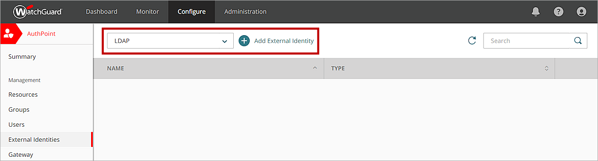
- In the Name text box, type a descriptive name for the external identity.
- In the LDAP Search Base text box, type your LDAP root domain name. In this example, the organization name is org so we type O=org. Tip!
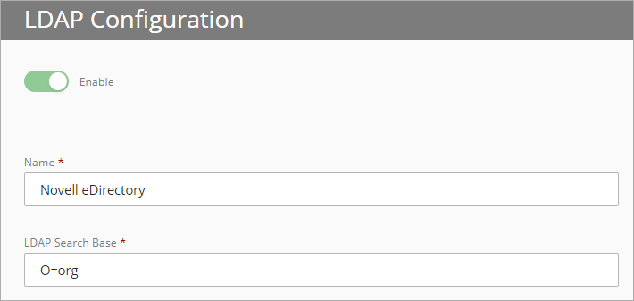
- In the System Account and Passphrase text boxes, type the credentials for a user that has permissions to perform LDAP searches and binds. If this user is not in the default Users folder, select the slider and type the full distinguished name of the user. Tip!
In this example, we have a user named administrator that is not in the default Users folder. So we must select the slider and type the distinguished name of our user as CN=administrator,O=org.
The System Account user does not have to be an administrator.
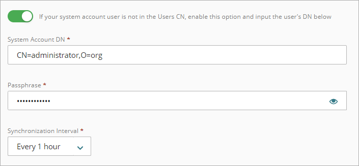
- From the Synchronization Interval drop-down list, specify how often you want to synchronize the LDAP database. If you select Every 24 hours, you must also specify what time the synchronization starts each day.
- For Type, select Others.
- Leave the Domain text box blank.
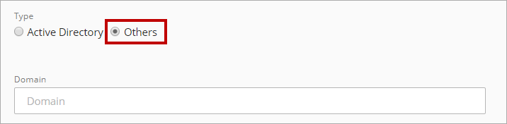
- Type a value for each attribute.
- In the Attribute related to the first name text box, type cn.
- In the Attribute related to the last name text box, type sn.
- In the Attribute related to the user email text box, type mail.
- In the Attribute related to the LDAP user text box, type uid.
This attribute must be UID.
- In the Attribute related to the user login text box, type cn.
- In the Attribute related to the mobile number text box, type textNumber.
You might need to change some of these values based on how your organization has configured NetIQ eDirectory.
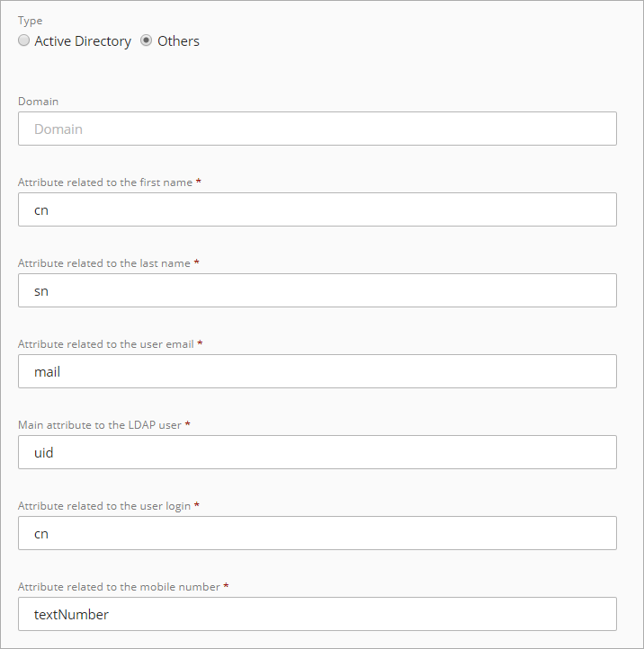
- In the Server Address text box, type the IP address of your LDAP server.
- In the Server Port text box, type the port for your server.
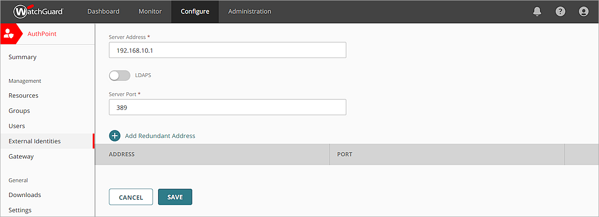
- (Optional) To add a redundant address for your external identity, click Add Redundant Address and type a different address and port for the same LDAP datadabse.
- Click Save.
Add the External Identity to the Gateway Configuration
The LDAP external identity must be added to the configuration for a Gateway that is installed on your corporate network and has access to the NetIQ eDirectory server. Once you do that, you can test the connection to NetIQ eDirectory.
If you do not have an existing Gateway, you must add one. For more information, see About Gateways.
To add an external identity to the configuration for a Gateway:
- Select Gateway.
- Click the Name of your Gateway.
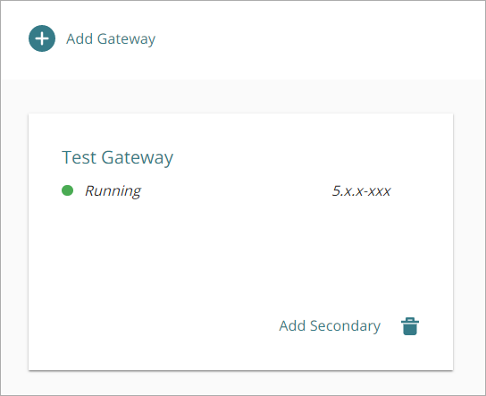
- From the Select an LDAP external identity list, select the external identity that you created for NetIQ eDirectory.
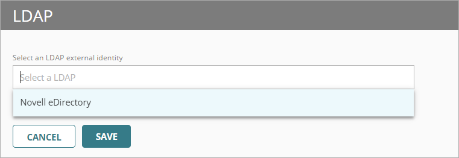
- Click Save.
Your external identity is now connected to your Gateway. This enables communication between AuthPoint and your NetIQ eDirectory server.
To test the connection to your external identity.
- From the navigation menu, select External Identities.
- Next to the external identity you added for NetIQ eDirectory, click
 and select Check Connection.
and select Check Connection.
A message appears at the bottom of the screen to indicate if AuthPoint can communicate with NetIQ eDirectory.
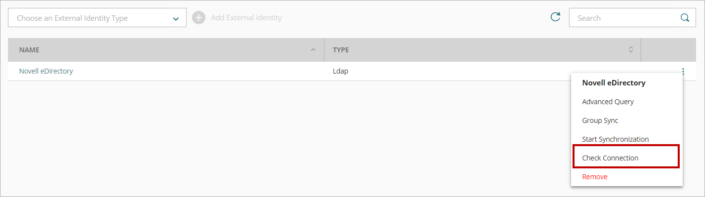
Sync Your Users
After you create an external identity for your Azure AD, you must add an advanced query to specify:
- The Novel eDirectory users to sync
- The AuthPoint group to add the users to
After you add an advanced query to find your users, AuthPoint syncs with NetIQ eDirectory at the next synchronization interval and creates an AuthPoint user account for each user identified by the query. If the query returns more users than you have available licenses for, AuthPoint only creates as many users as your license supports.
LDAP users that do not have a name, user name, or email address are not included in the synchronization.
Make sure that each user account has a valid email address. If the email address for a user account is not correct, the user cannot receive the email message to activate a token.
To add an advanced query:
- Select External Identities.
- Next to the LDAP external identity you added, click and select Advanced Query.
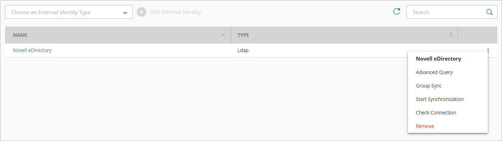
- On the Advanced Query page, click Add Advanced Query.
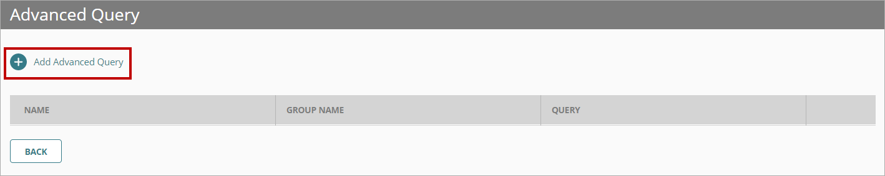
- In the Name text box, type a descriptive name for the query.
- From the Group drop-down list, select the AuthPoint group to add the users from this query to.
- In the Advanced Query text box, type your query. To return users that are members of a specific group, your query must include GroupMembership=.In this example, our query is (GroupMembership=cn=novell*).
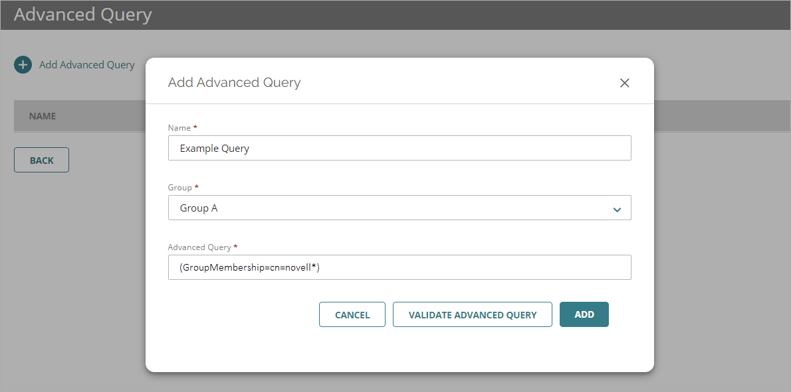
- Click Validate Advanced Query to preview your query results. You can see the number of users your query returns and a preview of the first 10 users.
No users are synced when you validate a query. Users are only synced after you have added your query to the external identity and saved the changes.
- Click Add to add your query to the external identity.
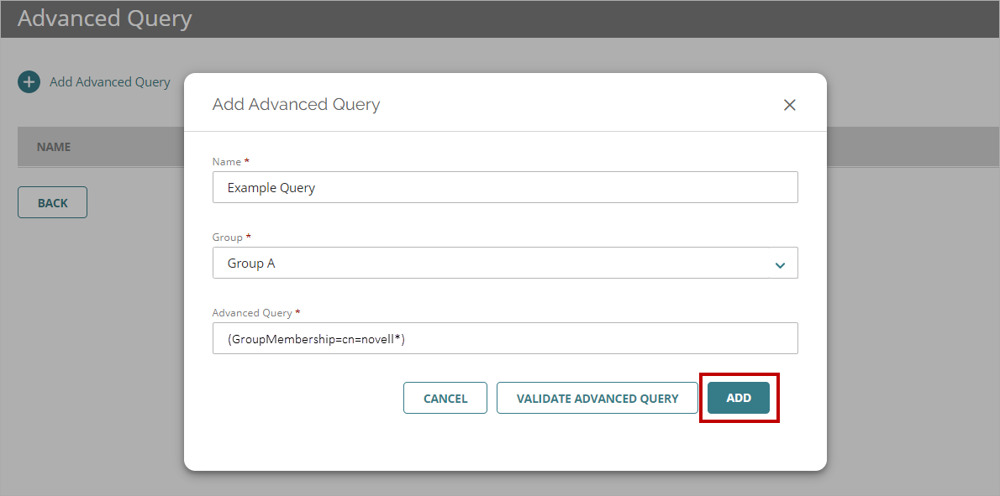
AuthPoint syncs with NetIQ eDirectory at the next synchronization interval and an AuthPoint user account is created for each user identified by the advanced query.
To start a sync immediately, on the External Identities page, next to the your external identity, click  and select Start Synchronization.
and select Start Synchronization.